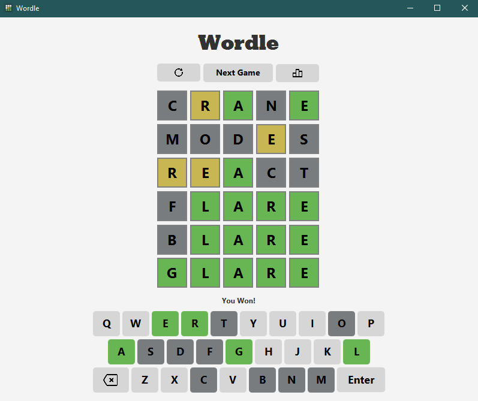

Portfolio
Here are some projects I've worked on!
-
Wordle GUI

In this recent project, I created a JavaFX application that simulates Wordle. I built this using Java 11 and JavaFX for the GUI components and used Maven for project management. I also used an MVC design to separate the logic from the UI to keep it readable and scalable. Some features I implemented were real-time word validation, score tracking, and serialization/deserialization of saved game data. The word validation feature checks if the word is in the 10,000+ list of guessable words and if the word is the correct length. The program also selects a random word from a list of over 2,000 potential words. To implement a load/save feature, I serialized the game state to a file and deserialized it when the app was reopened. This project also taught me front-end design and how to create a user-friendly interface.
- Java
- JavaFX
- CSS
-
Dining Hall Review App
A few summers ago, I helped create a full stack web application for students to review dining hall menu items to improve mealtime decisions and gather community feedback. I worked on the data scraping using Puppeteer to get daily menu data from the dining hall website to get real-time accuracy of meal information. I also utilized MongoDB as a database to store hundreds food items and retrieve user reviews, ratings, and menu details. This project is currently on hold and hasn't been deployed due to changes on the TAMU dining website and may or may not be finished at another time.
- JavaScript
- Puppeteer
- MongoDB
-
Unordered Map
When learning about C++ data structures, I implemented std::unordered_map to store key-value pairs. I was able to implement O(1) average time complexity for insertion, deletion, and search operations using hash functions. I also implemented private helper functions and iterators to manage buch indexing, node insertion, and element lookup. From there, I create two custon hash algorithms, (Polynomial Rolling Hash and FNV-1a) to handle collisions and improve data distribution.
- C++